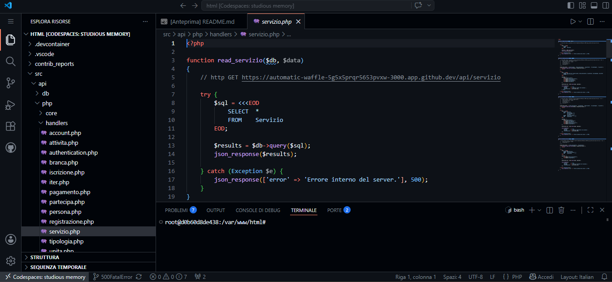
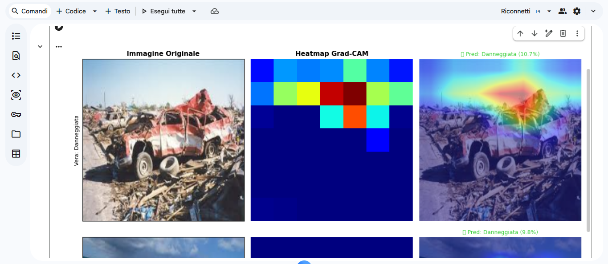
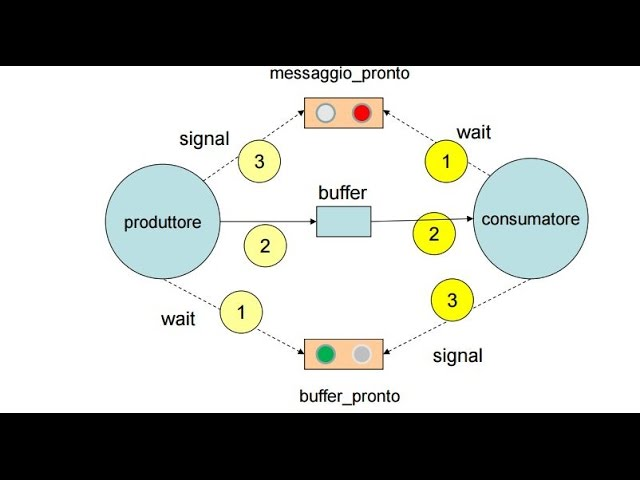
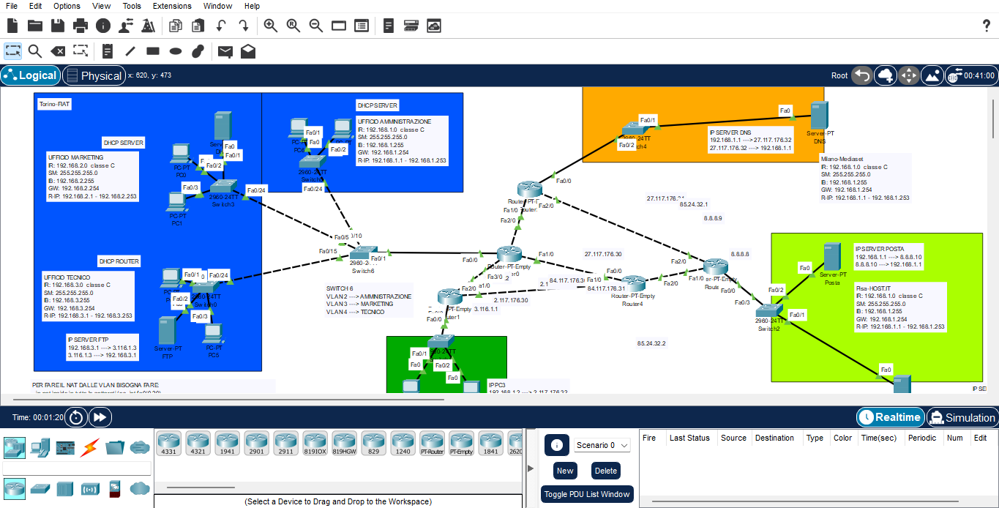
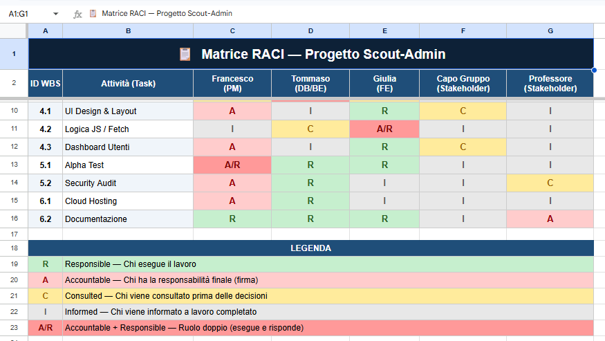
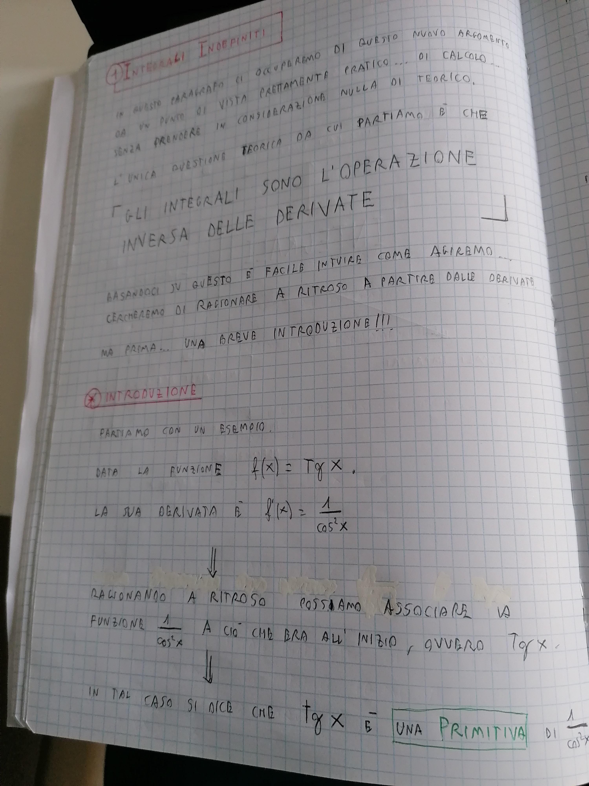
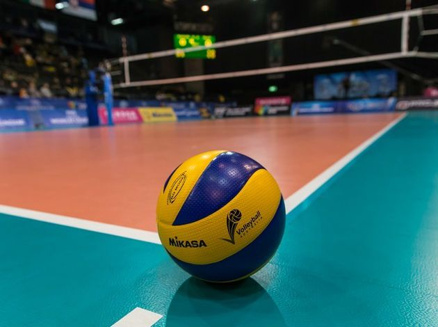

Area Tecnica
Informatica
Costruire qualcosa che deve funzionare davvero — non solo superare una verifica.
Leggi di piùI programmi si riferiscono a quelli effettivamente svolti nella classe 5ª CM, a.s. 2025/2026, come da Documento del Consiglio di Classe.

Costruire qualcosa che deve funzionare davvero — non solo superare una verifica.
Leggi di più
Come un modello impara da esempi, sbagliando e correggendosi nel tempo.
Leggi di più
Lo sviluppo Android e l'importanza del metodo nel gestire processi concorrenti.
Leggi di più
L'infrastruttura invisibile, i protocolli e la sicurezza delle reti di comunicazione.
Leggi di più
I meccanismi economici, i costi aziendali e l'organizzazione dei progetti software.
Leggi di più
Le funzioni in due variabili, gli integrali e il ragionamento probabilistico.
Leggi di piùLa fiumana del progresso in Verga e il panismo decadente di D'Annunzio.
Leggi di piùLa connessione tra crisi economica e l'ascesa dei totalitarismi del Novecento.
Leggi di piùL'estetismo di Oscar Wilde, l'arte per l'arte e la microlingua tecnica.
Leggi di più
La teoria sull'alimentazione, il metabolismo energetico e la pratica sportiva.
Leggi di più